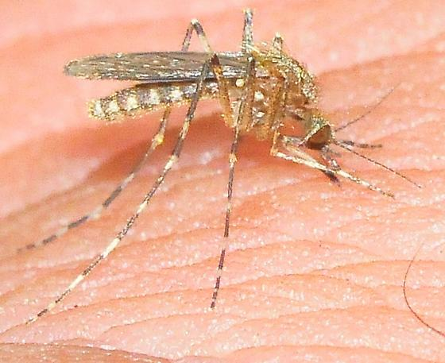

 El género Coquillettidia forma parte de la familia Culicidae y es conocido por sus adaptaciones únicas al entorno acuático, particularmente en ambientes con vegetación densa como pantanos, ciénagas y lagunas con plantas emergentes. Este género está distribuido en diversas regiones tropicales y subtropicales del mundo, y algunas de sus especies tienen importancia médica por su papel en la transmisión de enfermedades.
La evolución de Coquillettidia ha estado marcada por su capacidad de adaptarse a criaderos naturales complejos. A diferencia de muchos otros mosquitos, sus larvas poseen una estructura especial que les permite adherirse a tallos de plantas acuáticas para obtener oxígeno directamente de ellas, evitando subir a la superficie. Esta característica les proporciona protección contra depredadores y condiciones adversas en la superficie del agua.
Estas adaptaciones han sido clave para su persistencia en hábitats poco accesibles y para su evolución en zonas húmedas densamente vegetadas. Algunas especies, como *Coquillettidia perturbans*, han sido relacionadas con la transmisión de virus como el del Nilo Occidental en ciertas regiones.
El ciclo de vida del mosquito Coquillettidia sigue las etapas típicas de huevo, larva, pupa y adulto, pero presenta una notable diferencia en la fase larval. Los huevos son depositados en masas flotantes sobre el agua. Al eclosionar, las larvas se sumergen y se adhieren a raíces o tallos de plantas acuáticas como el lirio o el junco, de los que extraen oxígeno mediante estructuras respiratorias especializadas.
Estas larvas no necesitan subir a la superficie para respirar, lo que las hace difíciles de detectar y controlar. Pasan por cuatro estadios larvales antes de transformarse en pupas, que también pueden permanecer adheridas a la vegetación. Finalmente, emergen los adultos, siendo las hembras hematófagas (se alimentan de sangre) y los machos nectarívoros.
Los adultos suelen volar en horas crepusculares o nocturnas y pueden desplazarse a grandes distancias desde sus criaderos. Esta movilidad, combinada con su capacidad de supervivencia en hábitats protegidos, contribuye a su potencial como vector de enfermedades.
Aunque es un vector secundario, *Coquillettidia perturbans* ha sido identificado como transmisor potencial del virus del Nilo Occidental, que puede causar fiebre, dolores musculares y, en casos graves, encefalitis o meningitis en humanos.
Este mosquito también ha sido implicado en la transmisión de encefalitis equina del Este y del Oeste en regiones de América, enfermedades virales que afectan el sistema nervioso y pueden ser fatales en humanos y caballos.
El mosquito Coquillettidia produce picaduras con leve hinchazón y enrojecimiento. La picazón es moderada y puede pasar desapercibida.